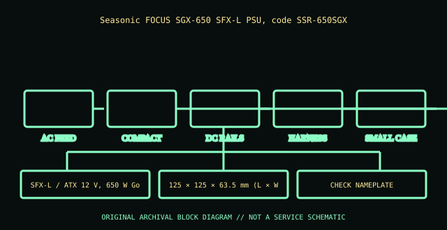

[ POWER CONVERSION // IDENTIFIED MODEL ]
Seasonic FOCUS SGX-650 (SSR-650SGX)
Seasonic FOCUS SGX-650 SFX-L PSU, code SSR-650SGX. This record applies only to the model and generation named here; similar wattage or connector shape does not establish equivalence.

HIGH-VOLTAGE WARNING: Disconnect mains before external inspection. Never open a PSU. Internal capacitors may retain lethal charge after unplugging. Do not probe or repair its interior; use qualified service or replace the unit.
Model-specific ratings & fit
| Manufacturer identity | Seasonic FOCUS SGX-650 SFX-L PSU, code SSR-650SGX |
|---|---|
| Form factor / generation | SFX-L / ATX 12 V, 650 W Gold |
| AC input | 100–240 V AC, 50–60 Hz; read exact label. |
| DC output | 650 W continuous; +12 V 54 A / 648 W; +3.3 V/+5 V combined and auxiliary rail limits from model nameplate/manual. |
| Dimensions / mounting | 125 × 125 × 63.5 mm (L × W × H), SFX-L. |
| Connectors | Fully modular 24-pin ATX, CPU/EPS, PCIe, SATA and peripheral; bracket may be included for ATX mounting. |
| Revision distinctions | SSR-650SGX is SFX-L, not FOCUS GX-650 SSR-650FX; same brand/model family does not assure modular cable compatibility. |
Compatibility & safe installation
- Confirm complete model, suffix, region and revision against the unit nameplate and manufacturer manual. Do not substitute by wattage or connector-shell appearance.
- Verify AC range, per-rail and combined DC ratings, line derating, pinout, dimensions, cooling direction and qualified host support.
- Modular cables have model- and revision-specific PSU-side wiring. Use only approved leads for this exact PSU; a plug that fits may have a dangerous pinout mismatch.
- For redundant/hot-plug modules, follow the host service manual, redundancy requirements and supported replacement procedure. A server blind-mate module is not an ATX supply.
- Never open or probe a PSU. Retire damaged, wet, burnt, corroded, modified or unidentified units.
Revision & archival notes
SSR-650SGX is SFX-L, not FOCUS GX-650 SSR-650FX; same brand/model family does not assure modular cable compatibility.
Preserve SSR-650SGX code, label, manual revision and cable kit; verify fit in a case before purchase.
Archive the complete nameplate, part/spare number, manufacturing date/revision, region, connector/cable labels, mounting orientation, source document and its issue date. Separate label transcription from testing.
Manufacturer references
- Seasonic FOCUS SGX-650 (SSR-650SGX)Seasonic FOCUS SGX-650 SFX-L PSU, code SSR-650SGX. Use the exact product manual/system matrix; regional SKUs and later hardware revisions may differ.
- Intel ATX / ATX12V Power Supply Design GuideStandards reference for desktop ATX only. Server hot-swap and Flex Slot interfaces are proprietary and not interchangeable by generic ATX guidance.
Manufacturer label and applicable model/system manual take precedence over this summary.